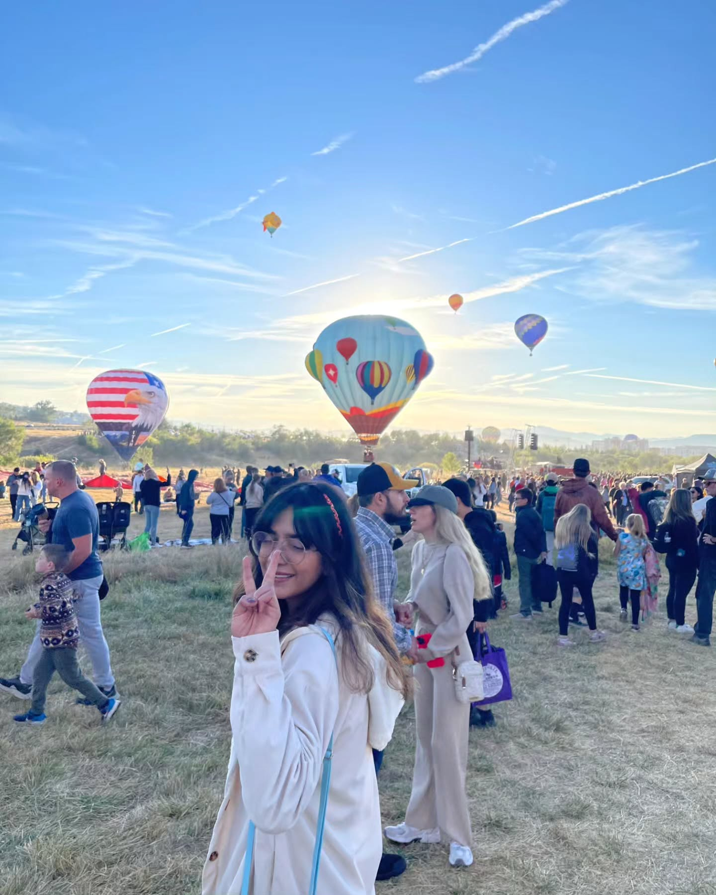

🌀 cyclone
Ananya Sen (uh-NUN-yah) 🔊
I am a Graduate Student at the University of Nevada, Reno (Jan 2024 - Present). I am also working as a Graduate Research Assistant at the Desert Research Institute (Jan 2024 - Present). Born and raised in India, I grew up in Lucknow - a city known for its rich culture and heritage. My curiosity about the natural world eventually led me to pursue atmospheric science. As a Graduate Research Assistant in Atmospheric Science at the Desert Research Institute, I am currently exploring and contributing to the understanding of the effects of Gravity Waves on extratropical cyclones leading to heavy precipitation.
As a dedicated researcher in the field of atmospheric sciences, my mission is to contribute to responsible stewardship of our planet’s natural resources. My commitment to sustainability extends from individual practices to influencing community-level actions. I aim to drive meaningful social impact through rigorous scientific research, fostering interdisciplinary collaborations and disseminating knowledge. Leveraging my network and expertise, I strive to create an academic environment where continuous learning and sharing are at the forefront, all with the goal of building a more sustainable future. My research focuses on
Atmospheric Science, particularly understanding the effects of Gravity Waves on extratropical cyclones and their role in heavy precipitation events.
Atmospheric Science: gravity waves, extratropical cyclones, heavy precipitation
📚 Publications & Conference Proceedings

Interplay Between Deep Convection and Mesoscale Gravity Waves
AGU25 Annual Meeting [Oral Presentation]
Sen, A. & Kaplan, M. L.
New Orleans, Louisiana, December 15-19, 2025
AGU25 Annual Meeting [Oral Presentation]
Sen, A. & Kaplan, M. L.
New Orleans, Louisiana, December 15-19, 2025

Investigating Cyclogenesis and the Genesis of Large Amplitude Mesoscale Gravity Waves
American Meteorological Society (AMS) Annual Meeting [Oral Presentation]
Sen, A. & Kaplan, M. L.
New Orleans, Louisiana, January 12-16, 2025
American Meteorological Society (AMS) Annual Meeting [Oral Presentation]
Sen, A. & Kaplan, M. L.
New Orleans, Louisiana, January 12-16, 2025
The Role of Upper-level Jet Imbalance in a Mesoscale Gravity Wave Event Organized Near Complex Terrain
AGU24 Annual Meeting [Oral Presentation]
Sen, A. & Kaplan, M. L.
Washington, DC, December 9-13, 2024
AGU24 Annual Meeting [Oral Presentation]
Sen, A. & Kaplan, M. L.
Washington, DC, December 9-13, 2024
The Role of Upper-level Jet Imbalance in a Gravity Wave of Depression Organized Near Complex Terrain
WRF/MPAS Users Workshop 2024
Sen, A.
Boulder, CO, June 25-28, 2024
WRF/MPAS Users Workshop 2024
Sen, A.
Boulder, CO, June 25-28, 2024

Insights from CMIP6 for Pollution Potential over IGP
Pollution Control for Clean Environment — Volume 2 (pp.167-174) [Book Chapter]
Sen, A. & Vinoj, V.
ICPCCE-2023, IIT Bhubaneswar, India, 2023
Pollution Control for Clean Environment — Volume 2 (pp.167-174) [Book Chapter]
Sen, A. & Vinoj, V.
ICPCCE-2023, IIT Bhubaneswar, India, 2023

Air Quality and Stagnation over India: A Comprehensive Analysis
Tropmet-2023 [Poster]
Sen, A. & Vinoj, V.
Changing Dynamics of Arid Region and Impact on Weather and Climate of Indian Subcontinent, Jaipur, India, 2023
Tropmet-2023 [Poster]
Sen, A. & Vinoj, V.
Changing Dynamics of Arid Region and Impact on Weather and Climate of Indian Subcontinent, Jaipur, India, 2023

Air Quality Monitoring over Rural Areas using Indigenous Technology (AMRIT)
Indian Aerosol Science and Technology Association (IASTA) [Abstract]
Tripathi, S. N. et al. (incl. Sen, A.)
NAVI Mumbai, India, 2023
Indian Aerosol Science and Technology Association (IASTA) [Abstract]
Tripathi, S. N. et al. (incl. Sen, A.)
NAVI Mumbai, India, 2023
🎓 Education

University of Nevada, Reno
Postgraduate Degree, Atmospheric Science
Jan 2024 – Present
Indian Institute of Technology Bhubaneswar (IIT Bhubaneswar)
Master's degree, Atmospheric and Oceanic Sciences
2021 – 2023

University of Lucknow
Bachelor of Science - BS, Geology, Physics and Mathematics
2018 – 2021

Study Hall School
2004 – 2018
🧩 Outreach & Activities
2023
Volunteer
Climate Science E-Learning Providers
Content reviewer, created awareness about climate change science and solutions
2023
Student Placement Coordinator
MSc Atmospheric and Ocean Sciences
Assisted in coordination of on-campus recruitment for graduating students
2022
Participant
NASA ARSET Webinar
Accessing and Analysing Air Quality Data from Geostationary Satellites
2021
Participant
ISRO - Indian Institute of Remote Sensing
Outreach Program on Geospatial Technology for Hydrological Modelling
2021
Industrial Training
Indian Institute of Tropical Meteorology (IITM)
Short Range, Seasonal and Extended Range Forecast
2021
Industrial Training
Indian National Centre for Ocean Information Services (INCOIS)
Tsunami Forecast, Remote Sensing & GIS, Ocean Modelling and Forecast
2018
Student Volunteer
India International Science Festival
Science for Transformation
2013-2018
Volunteer
Study Hall Educational Foundation (SHEF)
Worked with NGOs supported by Obama Foundation, volunteered in 'Each One Teach One' initiative
Associate Director, Marketing & Research
Girl Up Heron - UN Foundation
Oversaw initiatives to expand women and girls' access to education, employment and healthcare
🖼️ Gallery
some happy moments of my life.
first time witnessing the northern lights (2024)

first reno balloon race experience (2024)